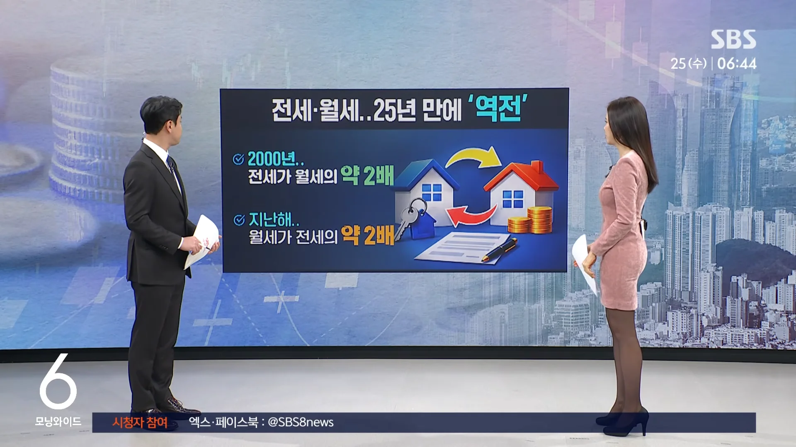
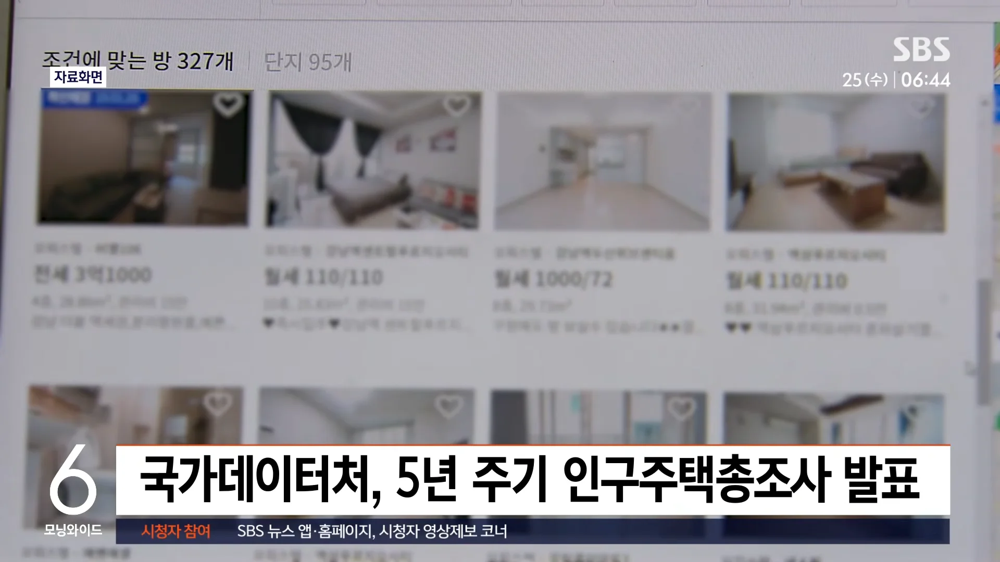
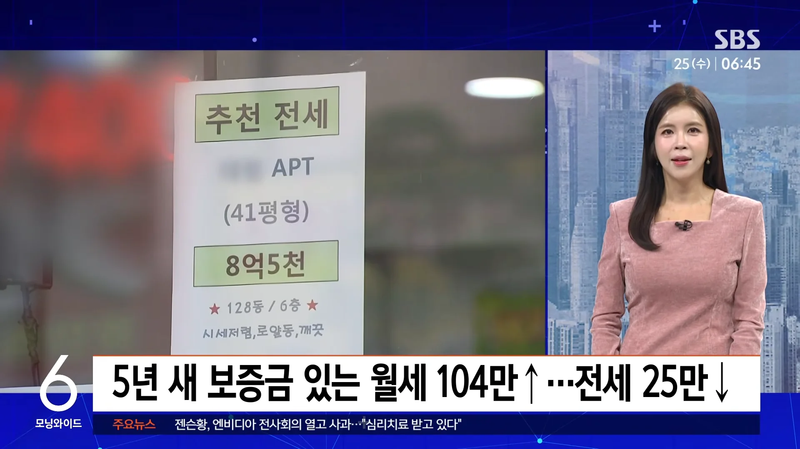
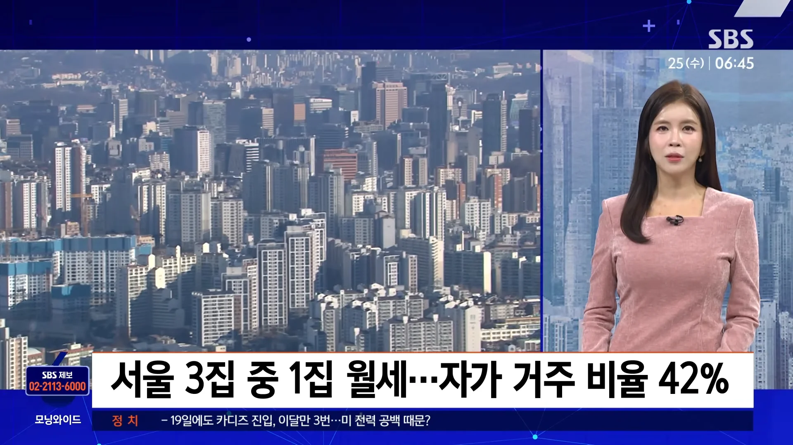
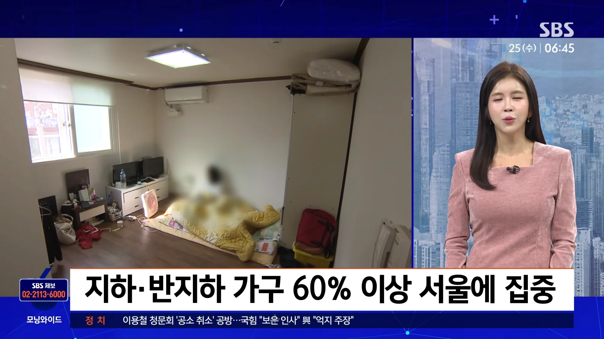
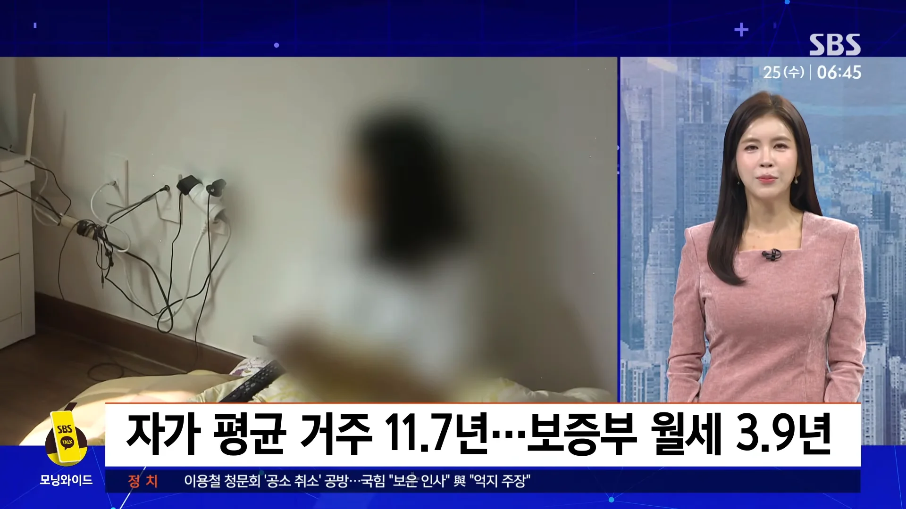
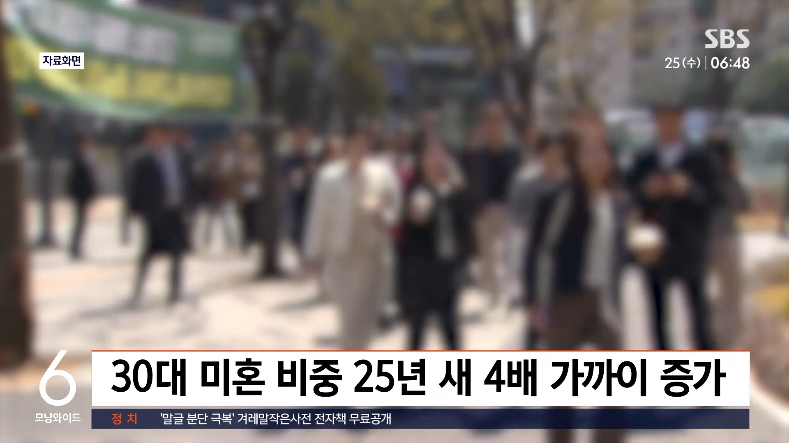
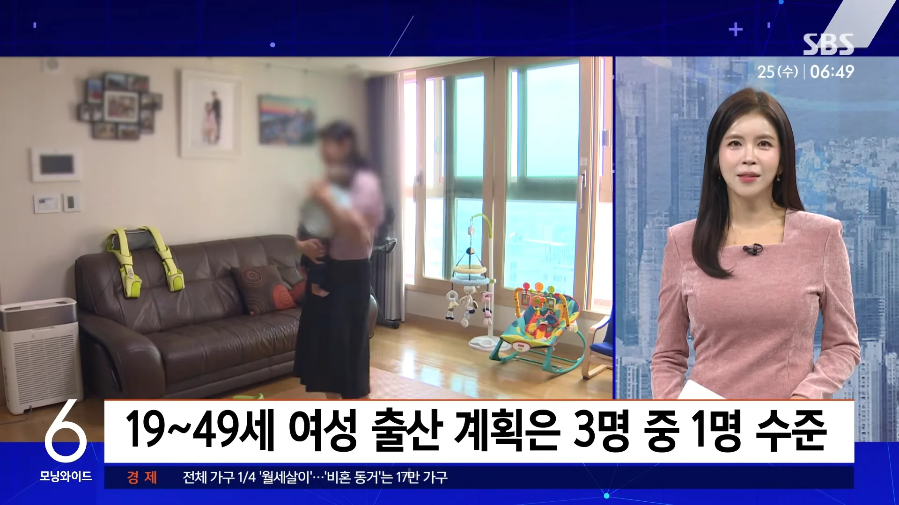

수요일 친절한 경제 한지연 기자 나와 있습니다. 한 기자, 전세와 월세 사는 집이 25년째 숫자가 뒤집혔다고요?
2000년에는 전세가 월세의 약 2배였는데 지난해에는 정반대가 됐습니다.
요즘 집 구할 때 전세보다 월세 얘기가 더 많이 들리시죠.
국가데이터처가 인구주택총조사 결과를 내놨습니다.
5년마다 전체 가구 가운데 10집 중 2집을 골라 더 자세히 물어보는 조사인데요.
숫자로 보면 월세 사는 집이 585만 가구로, 300만 가구 정도인 전세의 두 배 가까이 됩니다.
월세가 전세를 처음 앞지른 게 2015년 조사인데, 그 뒤로 격차가 더 벌어진 거죠.
5년 전보다 보증금 있는 월세는 104만 가구 늘었고, 전세는 25만 가구 줄었습니다.
세 사는 집의 무게중심이 목돈 맡기는 전세에서 매달 돈 나가는 월세로 옮겨간 겁니다.
데이터처는 보증금 부담과 전세사기 문제, 혼자 사는 가구가 늘어난 영향으로 보고 있는데요.
혼자 사는 집은 5년 새 160만 가구 늘어서 전체 열 집 중 네 집 가까이인데, 이 중 45%가 월세입니다.
서울은 더 두드러집니다.
세 집 중 한 집이 월세고, 내 집에 사는 비율은 42%로 전국에서 유일하게 절반이 안 됩니다.
전국 지하·반지하 30만 가구도 절반 넘게는 월세로 사는데, 열에 여섯 넘게가 서울에 있습니다.
월세는 사는 기간도 훨씬 짧습니다.
내 집이면 평균 11.7년인데, 보증금 있는 월세는 3.9년이고, 월세 사는 집 열에 셋은 지금 집에 온 지 1년도 안 됐습니다.
이어서 생활비 얘기인데요. 부모 세대와 자녀 세대가 다른 양상을 보이고 있다고요?
60세 이상은 셋 중 두 명이 스스로 해결을 하는데요.
20대 초반은 열에 여섯이 부모 도움만으로 삽니다.
예전에는 자식이 곧 노후 대책이라는 말도 했죠.
15년 전만 해도 60세 이상 가운데 생활비를 스스로 마련하는 분은 절반이 안 됐습니다.
여기서 스스로는 본인이나 배우자가 일해서 번 돈, 또 연금, 모아둔 재산으로 생활한다는 뜻인데요.
그새 이 비중이 20%포인트 넘게 늘었고, 외부 도움에만 기대는 분은 41%에서 23%로 줄었습니다.
일하는 분도 적지 않습니다.
60대 후반은 열에 셋 가까이, 70대 초반도 18%가 일해서 번 돈으로 생활하거든요.
반면 국민연금 같은 공적연금 하나로만 생활하는 분은 열 명 중 한 명꼴입니다.
다만 나이가 더 들면 기댈 곳이 달라집니다.
85세 이상이 되면 넷 중 한 명은 자녀 도움, 또 넷 중 한 명은 나라나 지자체 보조로 생활합니다.
나라 보조로 생활하는 사람은 20세 이상으로 보면 5년 새 36% 늘어 205만 명이 됐습니다.
반대로 자녀 세대는 20대 전체로 봐도 셋 중 한 명 넘게 생활비를 부모님께 기댑니다.
용돈 받는 정도가 아니라 생활비 전부를 부모님이 댄다는 얘기고요.
20대 후반도 다섯 중 한 명은 아직 부모님 도움만으로 생활합니다.
끝으로 결혼할 생각이 있는지도 이번 조사에서 처음 물어본 거죠.
30대 중에 절반 넘게가 미혼인데요.
그래도 10명 중 6명 이상은 결혼 의향이 있다고 했습니다.
주변에 결혼 안 한 30대 정말 많죠.
30대 미혼 비중은 2000년만 해도 13% 정도였으니까, 25년 새 네 배 가까이 늘었습니다.
30대 남성은 61%가 미혼이고, 여성도 7.5%에서 44.3%로 여섯 배 가까이 됐고요.
그렇다고 다들 결혼을 접은 건 아닌 거죠.
물론 나이가 많아질수록 결혼 의향은 줄어서, 40대 미혼은 열에 넷만 결혼 생각이 있습니다.
남녀 차이도 있는데요.
30대 미혼 남성은 열에 일곱 가까이 결혼 생각이 있는데, 여성은 열에 여섯이 채 안 됩니다.
미혼 전체로 보면 일을 하느냐 안 하느냐로도 갈렸습니다.
일하는 미혼은 60.5%가 결혼할 생각이 있다고 했지만, 일하지 않는 미혼은 52.3%로 오히려 8%포인트 넘게 낮았거든요.
다만 왜 아직 안 했는지, 그 이유까지는 이번 조사에서 묻지 않았습니다.
결혼보다 아이 계획은 더 조심스럽습니다.
30대 미혼 여성 가운데 아이를 낳을 계획이 있는 사람은 절반이 안 됐고, 19살에서 49살까지 전체로 봐도 셋 중 한 명 정도입니다.
원하는 아이 수도 한 명이 두 명보다 많았고요.
결혼한 여성 가운데 아이가 없는 비율도 10%로, 15년 전의 2.5배가 됐습니다.
댓글
수집 당시 댓글 74개
봇치쟝 · 11.26 20:35:43
ㅇㅇ · 11.26 20:36:23
ㅇㅇ · 11.26 20:36:47
ㅇㅇ · 11.26 20:36:55
· 윈터커밍 · 11.26 20:50:31
192.168.* · 11.26 20:36:57
ㅇㅇ · 11.26 20:37:01
ㅇㅇ · 11.26 20:37:30
ㅇㅇ · 11.26 20:38:08
ㅇㅇ · 11.26 20:38:25
· 윈터커밍 · 11.26 20:50:36
· ㅇㅇ · 11.26 20:52:38
ㅇㅇ · 11.26 20:38:29
ㅇㅇ · 11.26 20:39:01
ㅇㅇ · 11.26 20:40:22
· ㅇㅇ · 11.26 20:42:02
· 2.1배TQQQ · 11.26 20:42:45
· ㅇㅇ · 11.26 20:44:41
ㅇㅇ · 11.26 20:41:06
· ㅇㅇ · 11.26 20:42:23
ㅇㅇ · 11.26 20:41:51
퀸스라이크 · 11.26 20:42:00
ㅇㅇ · 11.26 20:42:11
ㅇㅇ · 11.26 20:42:16
· ㅇㅇ · 11.26 20:44:01
ㅇㅇ · 11.26 20:42:23
· ㅇㅇ · 11.26 20:44:16
· ㅇㅇ · 11.26 20:47:54
노은지 · 11.26 20:42:51
· ㅇㅇ · 11.26 20:43:18
ㅇㅇ · 11.26 20:43:07
· 윈터커밍 · 11.26 20:50:53
· ㅇㅇ · 11.26 20:52:58
ㅇㅇ · 11.26 20:43:09
ㅇㅇ · 11.26 20:43:19
· 윈터커밍 · 11.26 20:51:00
ㅇㅇ · 11.26 20:43:29
· ㅇㅇ · 11.26 20:45:38
· ㅇㅇ · 11.26 20:48:56
헌트 · 11.26 20:43:39
ㅇㅇ · 11.26 20:43:43
ㅇㅇ · 11.26 20:43:48
· 윈터커밍 · 11.26 20:51:09
ㅇㅇ · 11.26 20:45:05
ㅇㅇ · 11.26 20:45:10
ㅇㅇ · 11.26 20:45:43
ㅇㅇ · 11.26 20:46:09
ㅇㅇ · 11.26 20:46:21
식물빌런 · 11.26 20:46:27
ㅇㅇ · 11.26 20:46:29
ㅇㅇ · 11.26 20:46:35
식물빌런 · 11.26 20:46:53
바이럴탐지기 · 11.26 20:47:03
ㅇㅇ · 11.26 20:47:03
ㅇㅇ · 11.26 20:47:25
· ㅇㅇ · 11.26 20:49:08
· ㅇㅇ · 11.26 20:49:57
식물빌런 · 11.26 20:48:03
앤드류그레이브스 · 11.26 20:48:33
· 앤드류그레이브스 · 11.26 20:48:54
ㅇㅇ · 11.26 20:48:49
· 윈터커밍 · 11.26 20:51:24
ㅇㅇ · 11.26 20:49:10
ㅇㅇ · 11.26 20:49:26
ㅇㅇ · 11.26 20:49:53
찢한
민국
· 윈터커밍 · 11.26 20:51:29
ㅇㅇ · 11.26 20:50:10
ㅇㅇ · 11.26 20:50:23
싫으면
계속
전세사기 당하든가
ㅇㅇ · 11.26 20:50:24
ㅇㅇ · 11.26 20:51:03
히이잉 · 11.26 20:51:32
Adriel · 11.26 20:53:03
ㅇㅇ · 11.26 20:53:22
ㅇㅇ · 11.26 20:53:46